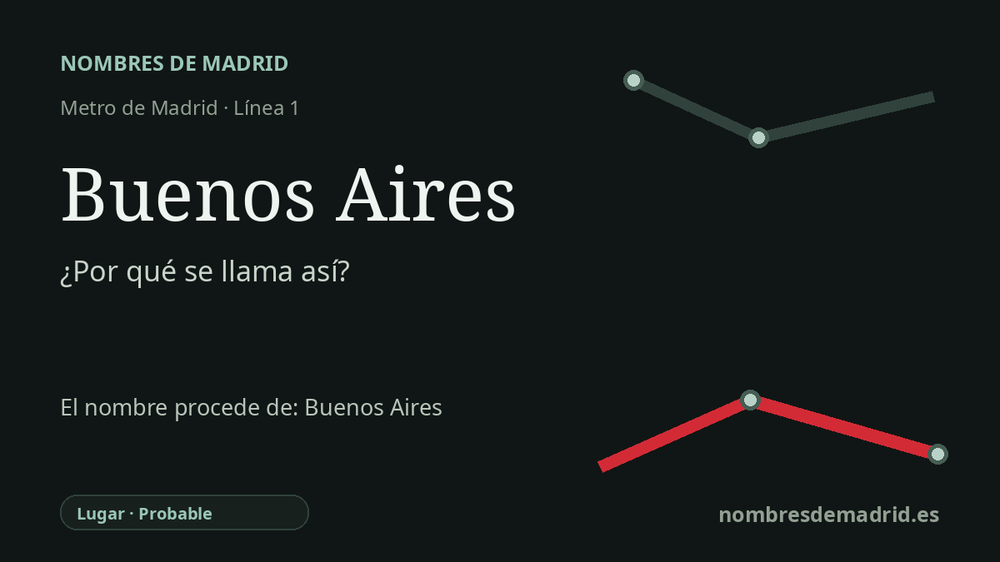

Publicado el · Investigación de Nombres de Madrid · Cómo verificamos cada origen · 7 fuentes consultadas
Respuesta rápida
La estación de Buenos Aires toma su nombre de la avenida de Buenos Aires, en Puente de Vallecas. El nombre remite a la capital argentina, aunque en la zona ya se documenta un topónimo Buenos Aires en 1880.
La historia del nombre
La estación de Metro llamada Buenos Aires hereda su nombre de la vía situada sobre ella. El Consorcio Regional de Transportes recoge la estación en la línea 1 y señala dos accesos: Pío Felipe, en la avenida de la Albufera 179, y Buenos Aires, en la avenida de la Albufera 140. Ese segundo acceso explica de forma directa el nombre de la estación: está junto a la avenida de Buenos Aires, en Puente de Vallecas.
La avenida remite a Buenos Aires, capital de Argentina. El Gobierno de la Ciudad de Buenos Aires describe la ciudad como capital de la República Argentina, situada en la orilla occidental del Río de la Plata, y recuerda sus dos fundaciones españolas: el asentamiento de Pedro de Mendoza en 1536 y la fundación definitiva de Juan de Garay en 1580. En esa historia, el nombre Buenos Aires queda ligado a la antigua advocación de Nuestra Señora o Santa María del Buen Ayre/Buenos Ayres.
En Vallecas, sin embargo, el nombre no parece ser solo un homenaje moderno a una capital extranjera. Un ejemplar digitalizado de El Imparcial del 10 de marzo de 1880 incluye un anuncio sobre terrenos en arriendo en la calle de Buenos Aires, Puente de Vallecas. Esto demuestra que el nombre Buenos Aires estaba presente en el paisaje local mucho antes de la estación de Metro de 1994.
Un callejero histórico local de Puente de Vallecas aporta un contexto útil: afirma que la calle Buenos Aires citada en 1880 correspondía, según un plano de 1900, a la actual calle de la Sierra del Cadí; también sitúa un Alto de Buenos Aires en un plano de 1929 cerca de la actual calle de Juliana Sancho y fecha la avenida actual en 1971. El Callejero oficial, en cambio, registra la avenida actual desde el 30 de abril de 1968 tras una fila anterior de avenida de Cerro de Buenos Aires. Esa discrepancia impide considerar 1971 como fecha formal sin más documentación cartográfica.
La cronología del transporte es más clara que la del callejero. La página de la Comunidad de Madrid sobre la prolongación Portazgo-Miguel Hernández explica que la estación de Buenos Aires se construyó en mina por ser más profunda y estar en terreno más consistente, y que el tramo se inauguró el 7 de abril de 1994. La fecha de apertura de 2007 es incorrecta para esta estación.